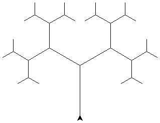
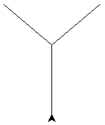
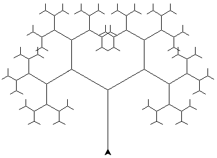
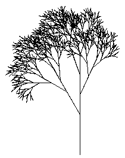
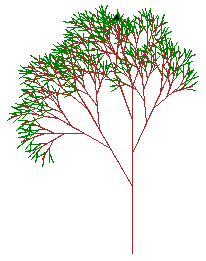

„Želví“ grafika – rekurzivní obrazce
by Jiří Znamenáček
Úvod
Jedním z velmi zábavných (a navíc ještě užitečných :-) použití želví grafiky je kreslení fraktálních obrazců pomocí rekurze (nebo smyček). V této přednášce si na příkladu stromu rozebereme základní principy, a pak se je pokusíme ještě trochu vylepšit.
PS: Mimochodem existují i rozšíření želví grafiky do tří rozměrů, která se používají kupříkladu pro reálně vypadající imitace rostlin.
Zadání příkladu
Naším úkolem je nakreslit přibližně následující „stromeček“:

Na první pohled to vypadá asi skoro nemožně, leč už na ten druhý je jasné, že stromeček je tvořen vždy dvěma zmenšenými kopiemi svého kmene na jeho konci, a to tak dále na každé kopii až po nějakou mez.
Rozbor zadání I
Co musí naše „želva“ udělat, aby požadovaný stromeček nakreslila? Následující:
- z výchozího místa nakreslit kmen zadané délky;
- na jeho konci nakreslit větev (= kmen kratší délky) pod jistým úhlem doleva;
- na jeho konci nakreslit větev (= kmen kratší délky) pod jistým úhlem doprava;
- na koncích obou větví zopakovat úplně to samé.
Rozbor zadání II – invariantní funkce
Rekurzivní krok je asi celkem jasný – na konci každého kmene/větve s želvou otočenou příslušným směrem ji necháme nakreslit kopii předchozí práce ve zmenšeném měřítku. A to hned dvakrát – jednou směrem vlevo, podruhé vpravo.
Zároveň je asi také jasné, že aby to mohlo fungovat, musí „želva“ po dokončení práce na příslušné (zmenšené) kopii stát opět na konci předchozí větve, jinak by pokus o vykreslení kopie druhým směrem začal na úplně špatném místě.
Odborně se tomu říká, že (příslušná rekurzivní) funkce musí být stavovým invariantem (state invariant) – jejím voláním se sice něco stalo (nakreslily se další části stromu), nicméně po jejím ukončení se „želva“ nachází ve stejném stavu jako na jejím začátku.
Náčrt bez rekurze
Ukažme si vykreslení do druhé úrovně (tedy pouze kmen a první dvojce větví) procedurálním kódem bez jakékoliv rekurze:

A nyní s rekurzí
Zkusme to nyní celé zapsat rekurzivně:
Tohle pochopitelně ještě nebude fungovat, protože rekurze se bude donekonečna zanořovat pořád na levou část stromu. Ale už je aspoň vidět, jak to celé vypadá.
Ukončení rekurze
Jelikož rekurze se musí někdy zarazit, nemá-li býti nekonečná, náš program se kapku zesložití o ukončovací podmínku (tou může být třebas jako zde vykreslovaná délka větví nebo počet zanoření do rekurze). Zároveň jsem přesunul spočítání délky nových větví do vlastní proměnné:

Reálněji vypadající strom I
Ačkoli jsem v předchozím příkladu trochu upravil úhly a vzdálenosti, výsledek je stejně takový nemastný neslaný – je totiž až příliš symetrický. A má málo listů ^_^ Ale nikdo nám vlastně nenakázal, že oba rekurzivní kroky musí být úplně stejné. Nebo že musí být právě jenom dva. A už vůbec ne, že všechny „větve“ musí vycházet ze stejného místa:

Reálněji vypadající strom II
Když už jsme v tom, přihodíme ještě i barvu. Jen nesmíme zapomenout dodržovat invarianci i pro ni:

L-systémy – simulace (nejen) růstu organismů
Po posledním příkladě asi nepřekvapí, že už dávno někoho napadlo použít želví grafiku, rekurzi a fraktály k simulaci skutečných rostlin, respektive obecně k simulaci růstu organismů. Konkrétně to byl Aristid Lindenmayer v roce 1968, který vymyslel tzv. L-systémy (aka Lindenmayerovy systémy). O těch ale až jinde.